Tosa Town, Kochi: things to do, food and stays
Tosa Town · Kochi
Tosa Town
Highlighted on the Kochi map.

Stay
さめうら荘
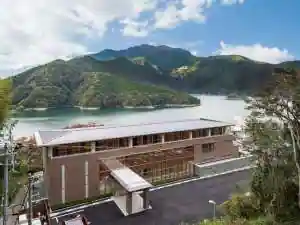
Sameura So
Dining
オンベリーコ
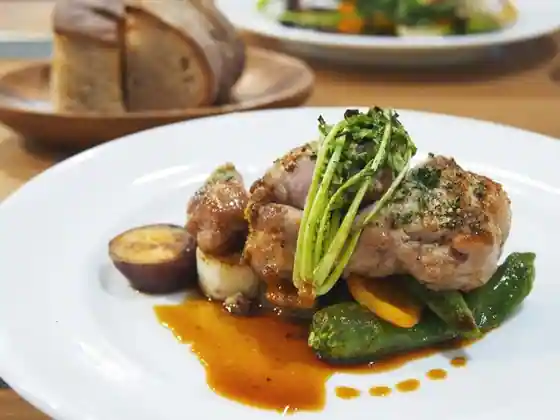
Onberiko
ラーメン土佐町439
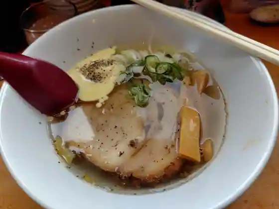
Ramen Tosa Machi 439
道の駅 土佐さめうら
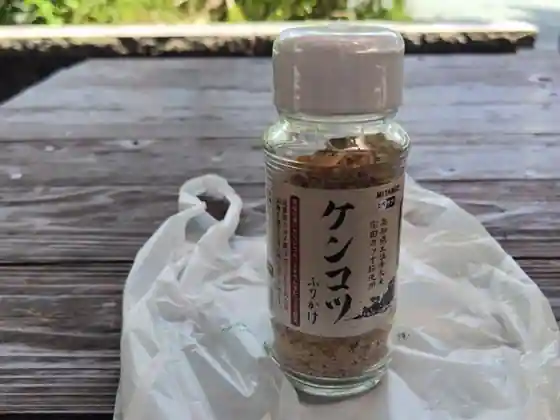
Michi No Eki Tosa Sameura
さめうら荘レイクサイドホテル
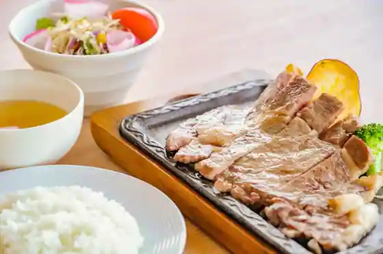
Sameura So Reikusaido Hotel
イールファームのうなぎ家
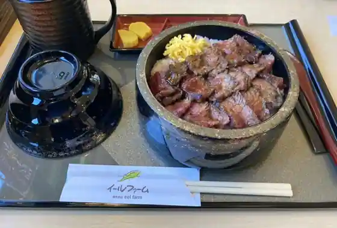
Irufamu Nonagi Ie
田舎料理 与作
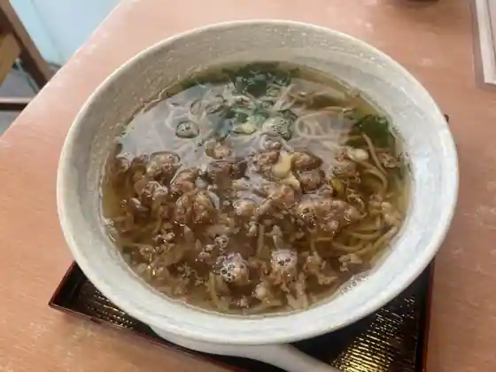
Inaka Ryori Yosaku
湖の駅 さめうらレイクタウン
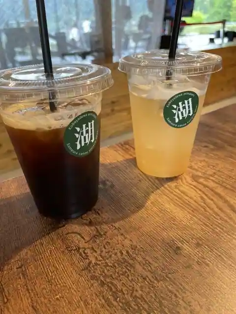
Mizumi No Eki Sameura Reikutaun
りぐる
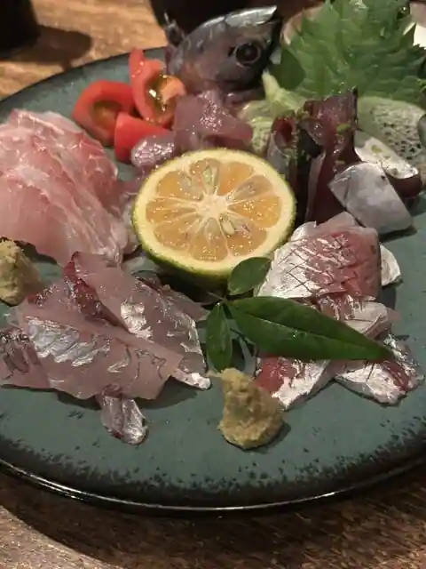
Riguru
cafeかのん
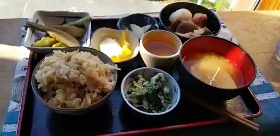
cafe Kanon
牛長
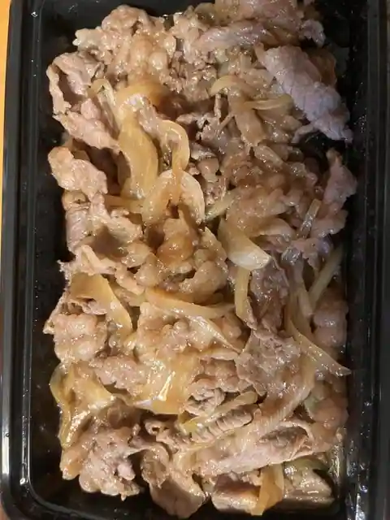
Ushi Cho
土佐さめうらBBQテラス
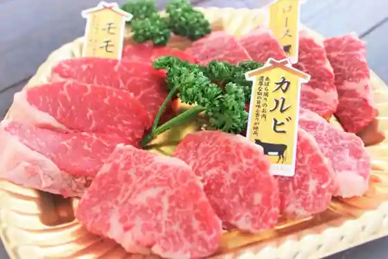
Tosa Sameura BBQ Terrace
柳屋食堂
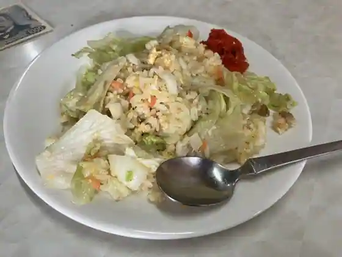
Yanagi Ya Shokudo
Sights
Roadside Station Tosa Town Sameura
Tosa Town Town Hall

Jokichi Nogawa Hashi

Tai

Tsuchii no Pa no Rama

Setogawa Gorge
Inamura Yama Tozanguchi